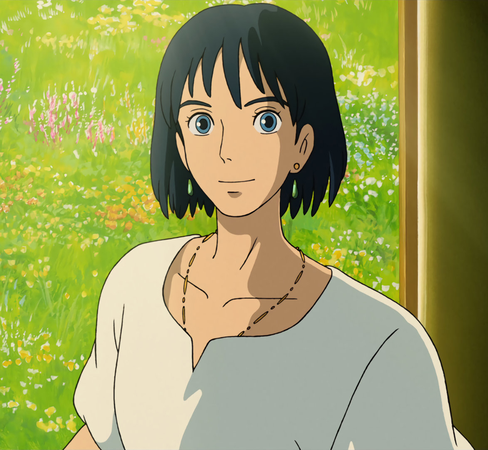

人物简介
苏菲 苏菲是个18岁的少女，出生于1886年的6月中旬，一个相貌清秀且心地善良的少女。和继母及两个妹妹住在一起，每日在父亲的帽子店工作，是帽子店的长女，过着平淡无奇的生活。父亲去世后与继母和妹妹相依为命。因为被荒野女巫出于嫉妒施展了诅咒，变成一个90多岁的老婆婆，以清洁妇的身份住进了哈尔的移动城堡。
 哈尔 移动城堡的主人，是一个性格温柔、有点孩子气的魔法师，他向往自由，厌恶战争，有一点臭美，容易被小事打击，传说中是个会吃掉姑娘心的巫师。哈尔拥有强大的力量，却不理会皇宫的征召，曾在史柏丽王室呆过一段时间。身着体面的银蓝色套装，有张棱角分明、五官精致的脸，以及精心打理过的金发，耳朵上垂下翠绿色的耳环。
马鲁克 马鲁克是哈尔的小徒弟，一个乖巧听话的小男孩。无依无靠的他常常一个人居住在城堡里，负责接洽王宫或城镇中来城堡拜访哈尔的人们，喜欢装扮成各种造型。师父不在家时，会以魔法斗篷变身老人接待来客，也会帮忙苏菲作收衣服等家事，相当喜爱苏菲，担心苏菲会和哈尔一起离去，后因苏菲保证“我们是一家人”而雀跃不已。
 稻草人菜头
原本是邻国王子，被下诅咒而变成稻草人，因为头像菜头，所以苏菲给它取了一个名字叫“菜头”。稻草人因为苏菲而获救，为了答谢她，送给了苏菲一根可爱而实用的拐杖，并且为苏菲找来了哈尔的移动城堡，而自己也一直默默跟着苏菲。后来被苏菲一吻解开诅咒，变成恢复人身的邻国王子。
稻草人菜头
原本是邻国王子，被下诅咒而变成稻草人，因为头像菜头，所以苏菲给它取了一个名字叫“菜头”。稻草人因为苏菲而获救，为了答谢她，送给了苏菲一根可爱而实用的拐杖，并且为苏菲找来了哈尔的移动城堡，而自己也一直默默跟着苏菲。后来被苏菲一吻解开诅咒，变成恢复人身的邻国王子。
 莎莉曼夫人
史柏丽王室所属的女巫，掌握王宫的实权。她法力十分强大，是王室的御用魔法师，也是哈尔和荒野女巫的老师。身为宫廷女巫的她有一种女王的霸气。沙丽曼召集哈尔和荒野女巫，为了防止他们的心性被恶魔控制，便杀死了荒野女巫的恶魔，收回了她的魔法，让她变成了一个普通的老婆婆。哈尔因为担心苏菲来到了王宫，当莎莉曼要杀死卡西法收回哈尔的魔法时，苏菲冲了上来救了哈尔。
莎莉曼夫人
史柏丽王室所属的女巫，掌握王宫的实权。她法力十分强大，是王室的御用魔法师，也是哈尔和荒野女巫的老师。身为宫廷女巫的她有一种女王的霸气。沙丽曼召集哈尔和荒野女巫，为了防止他们的心性被恶魔控制，便杀死了荒野女巫的恶魔，收回了她的魔法，让她变成了一个普通的老婆婆。哈尔因为担心苏菲来到了王宫，当莎莉曼要杀死卡西法收回哈尔的魔法时，苏菲冲了上来救了哈尔。
 荒野女巫
荒野女巫以前曾是个伟大的魔法师，却因和恶魔作交易，不敌邪恶诱惑，导致身心都被吃掉，成为误入歧途的魔女，但本身并不觉得自己是在做坏事，五十年前被赶到荒地。因哈尔的逃避而迁怒苏菲，是使苏菲变成老人的元凶。使唤着许多橡胶人手下，是个只会降咒不会解咒的魔法师，后来被莎莉曼夫人用计夺走了法力，因而恢复原本衰老的年岁，也因变老而造成脑筋不灵光。
荒野女巫
荒野女巫以前曾是个伟大的魔法师，却因和恶魔作交易，不敌邪恶诱惑，导致身心都被吃掉，成为误入歧途的魔女，但本身并不觉得自己是在做坏事，五十年前被赶到荒地。因哈尔的逃避而迁怒苏菲，是使苏菲变成老人的元凶。使唤着许多橡胶人手下，是个只会降咒不会解咒的魔法师，后来被莎莉曼夫人用计夺走了法力，因而恢复原本衰老的年岁，也因变老而造成脑筋不灵光。
卡西法 卡西法，是火恶魔，前身是流星——星之子。在下流星雨的湿地高原夜晚与少年哈尔以“心脏”订下契约，后居住在城堡壁炉中，是移动城堡的动力来源。卡西法的主食是木柴，但蛋壳、培根、荷包蛋这类的副食品也很喜欢，因吃被莎莉曼带来的偷窥虫而吃坏肚子，减弱法力。卡西法负责城堡的行走、用火等。
宾（茵茵） 莎莉曼夫人所养的使唤犬，狗的名字叫茵茵，可与莎莉曼透过水晶球联络，狗是忠诚的象征，茵茵即是萨里玛夫人身边忠诚的老臣，经历丰富，见识广博，年纪很大。茵茵带着莎莉曼夫人的任务，给苏菲带路，但是茵茵腿脚不好，于是苏菲把它抱上楼梯。它虽然不能爬楼梯，但它会飞，这是苏菲后来才知道的。